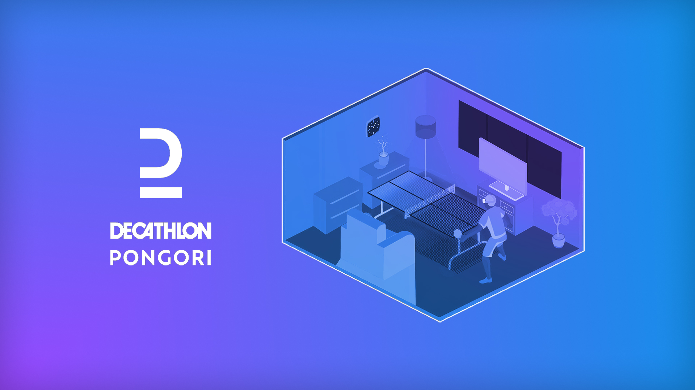
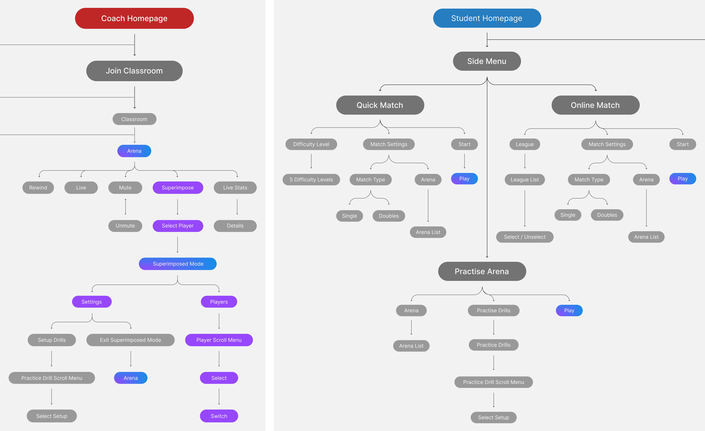
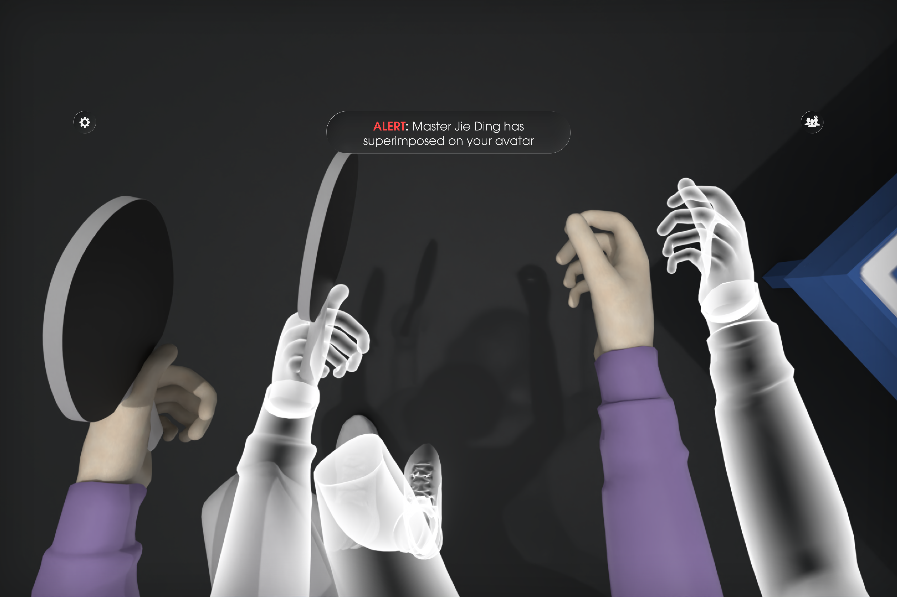
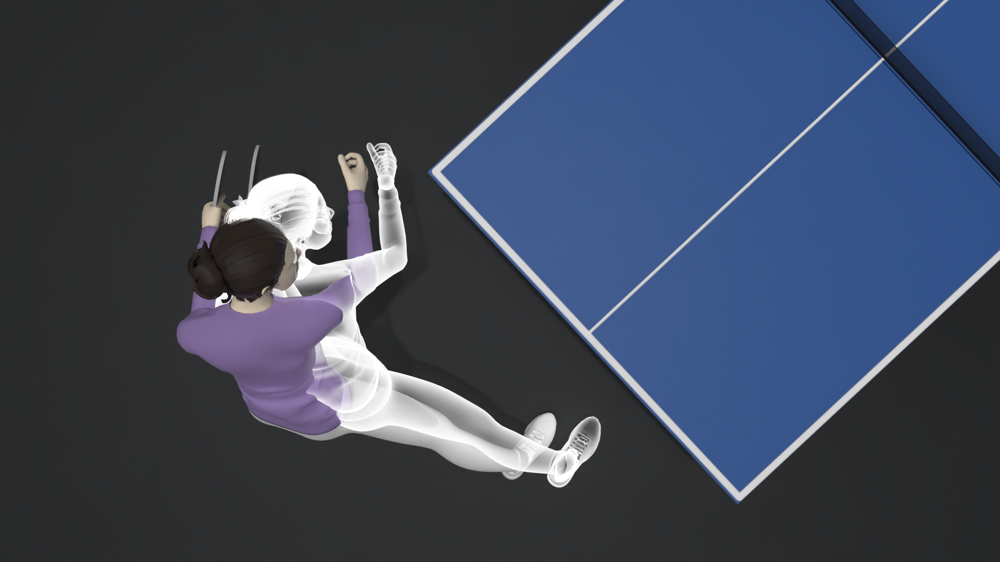
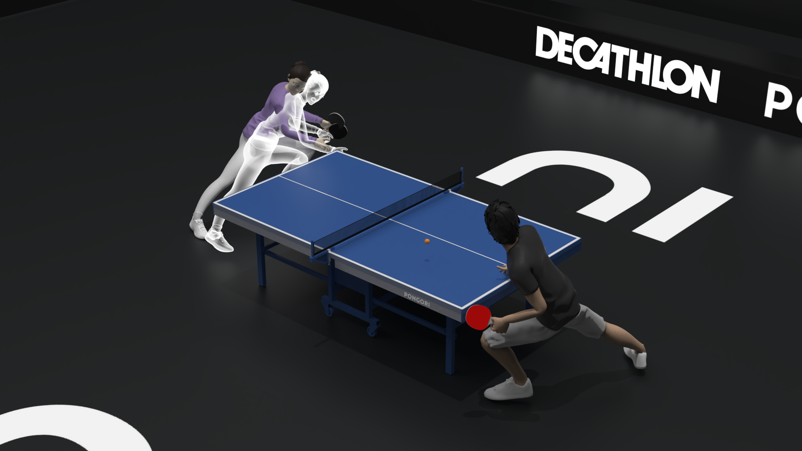
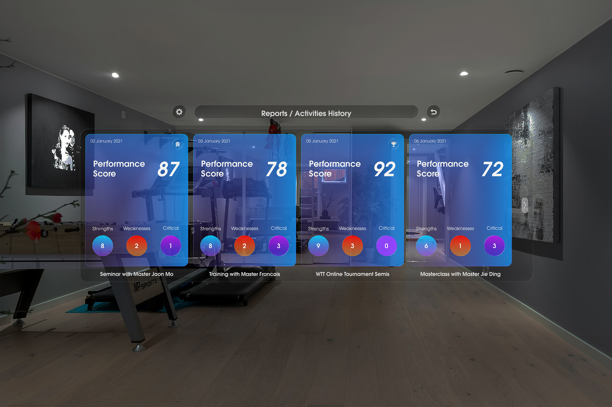
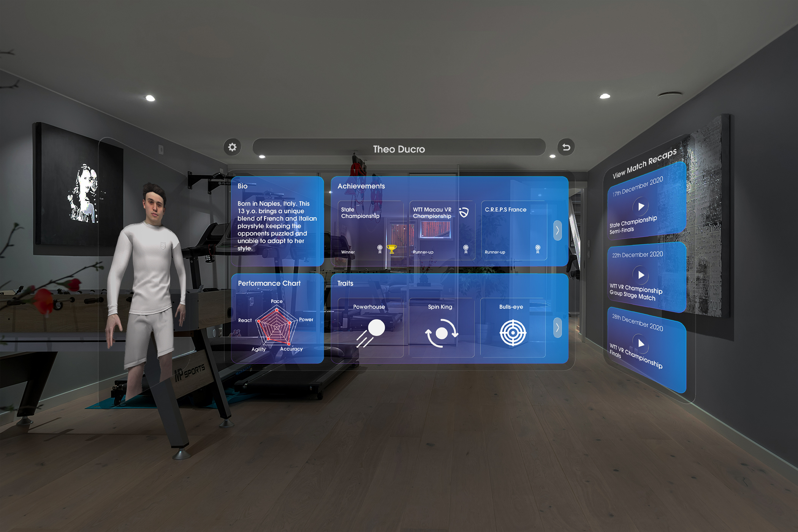
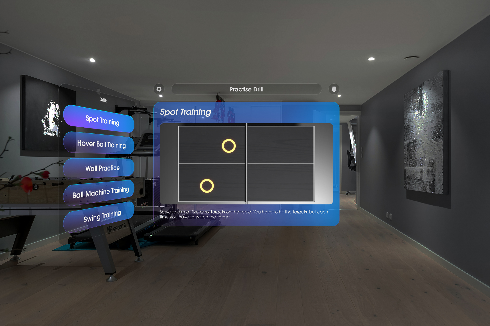

The brief was a VR table tennis training product for Decathlon Pongori. The actual design challenge was making a controller feel like a training environment.
This project was developed in partnership with Decathlon Pongori, exploring how the brand could extend beyond equipment into professional table tennis training systems. The brief focused on supporting players training within Pongori academies and competitive environments.
The Pongori line makes table tennis accessible — from beginner paddles to academy-grade equipment. Extending into VR training meant designing the first digital infrastructure for serious skill development within that ecosystem.

The Problem
Progression stalls when players can't get consistent table time, a partner, and quality repetitions at once. VR's opportunity was to make those repetitions available anywhere — but only if the interface didn't add its own layer of cognitive overhead on top of the physical act of playing.

Virtual reality offers an opportunity to remove several barriers that limit table tennis training. Instead of requiring a full table setup and a training partner, VR can simulate rallies and match situations within a small physical space.

VR-specific constraints — physical fatigue, controller mismatch, motion sickness — shaped every interaction decision in the first 10 sessions.
VR requires continuous physical engagement, which means users tire faster than in traditional digital interfaces. All interaction happens through handheld controllers that neither weigh nor move like a real table-tennis racket. This creates a mismatch between expected physical feedback and the simulated action, while extended arm movement quickly leads to fatigue.
Motion sickness threshold — session length and movement limits
Controller and racket don't feel the same
Physical fatigue compounds cognitive load in VR
Spatial audio as a primary feedback mechanism
Beginner users unfamiliar with VR UI conventions

Testing VR technology with players & coach at C.R.E.P.S. Training Center, France
Two early directions abandoned for the same reason: both introduced UI complexity inside VR instead of reducing it.
The concept emerged from combining Pongori’s global table tennis ecosystem with the VR Eleven simulation engine. Pongori provides sport expertise and community reach, while VR Eleven delivers realistic physics and match environments. Together they create the foundation for an immersive training platform.

Early sketches explored how traditional coaching cues could translate into spatial interactions. Guidance was embedded directly into gameplay through ball drills, visual prompts, and contextual feedback rather than menus. These explorations shaped how learning could happen through movement.

The system was structured around activities rather than screens. Two primary roles — coach and player — define the interaction model, with quick access to training sessions, match modes, and multiplayer play. This structure keeps navigation minimal inside the headset.

User flow — the connected training ecosystem showing how players, coaches, and sessions interact across the VR experience.
Direction 01
Virtual Classroom Dashboard
An early concept framed the experience as a virtual classroom where players could manage sessions, players, and tables through a floating dashboard. The interface mirrored familiar productivity tools, with tiles for classrooms, reports, and player management.
While visually structured, the interface pulled attention away from the physical play space. Instead of preparing players for movement and training, it introduced unnecessary UI complexity inside VR.

Direction 02
Feature-Heavy Menu System
Early exploration treated the product like a traditional application with multiple screens for activities, profiles, calendars, and configuration. This created a comprehensive system covering coaching, matches, and training management.
The large number of screens introduced cognitive overhead and broke the flow of physical play. Designing for VR required reducing navigation and embedding most interactions directly within gameplay.
Three decisions that determined how training is structured, how feedback is delivered, and how social learning works in a space designed for physical movement.
Options considered
- Free exploration of drills and matches
- Linear coaching program similar to real academies
- Menu-driven training modules
What we chose
- Guided skill progression through structured training sessions
- Enables players to build timing, reaction and control step-by-step
- Sacrifices open exploration and reduces feature density early
Why: Research showed beginners struggle not with technique but with reading the ball trajectory early enough to react. A guided progression allowed the first sessions to focus on perception and timing before introducing complex drills or competitive play.
Options considered
- Traditional 2D HUD overlays
- Menu interruptions between drills
- Environmental and spatial cues
What we chose
- Feedback embedded in the environment through spatial UI and audio cues
- Allows players to stay focused on the rally and maintain immersion
- Sacrifices detailed UI panels and dense on-screen information
Why: In VR, attention must remain on the ball and opponent. Interruptive interfaces break flow and increase cognitive load. Spatial cues and lightweight feedback allowed coaching guidance without pulling players out of the play space.
Options considered
- Fully solo training focused on drills and AI opponents
- Passive learning through recorded tutorials
- Shared training environments with coaches and other players
What we chose
- A classroom-style environment connecting coaches and players
- Enables observation, live coaching, and peer learning inside VR
- Sacrifices simplicity of a purely single-player training app
Why: Table tennis learning happens socially — players improve by watching techniques, practicing against others, and receiving live feedback. The classroom model recreated this dynamic inside VR, allowing structured training sessions where players could learn from both coaches and peers.
Spatial panels, coach presence, session reports, and performance-guided autonomous practice — four interaction models that replace the traditional sports coaching relationship.
Players begin in a spatial home environment where training activities appear as floating panels around the room. Instead of navigating traditional menus, players select drills, matches, or coaching sessions directly within the VR space.
Players enter a shared virtual training environment where drills, coaching sessions, and matches are accessible through spatial panels placed around the room. The interface remains lightweight and peripheral so players can focus on movement and gameplay rather than navigating complex menus.
Players can join classroom sessions where coaches demonstrate techniques and strategies. Observing expert play helps players understand positioning, timing, and shot mechanics before attempting the drills themselves.
Players can practice against other participants in live matches, allowing them to apply trained skills in real game scenarios. Multiplayer sessions recreate the competitive dynamics of real table tennis training environments.
Coaching guidance can appear directly within the player's environment, allowing instructors to demonstrate movements and techniques alongside the player during practice.



After each session, players receive performance reports highlighting strengths, weaknesses, and key moments from the match. These insights guide the next training cycle, allowing players to practice targeted drills autonomously before returning to competitive play.



If released as a real Decathlon Pongori training product, the first 90 days would focus on validating whether players can learn effectively inside VR and return regularly for practice. Success would be measured through session completion, repeated practice behaviour, and long-term retention within the training ecosystem.
70–80%
Session completion rate — Players who complete their first guided training session without abandoning the experience.
3–5 sessions
Average sessions before first skill unlock — Indicates whether the progression model encourages repeated practice and skill improvement.
35–40%
30-day retention — Players returning to continue training after their initial sessions.
A high drop-off during the first training session would indicate the onboarding flow is too complex or physically demanding. If players repeatedly choose quick matches instead of structured drills, it would suggest the training progression is not engaging enough to sustain deliberate practice.
What worked
During the project review, Jonathan Vandamme from Pongori highlighted how the system reframed VR from a gaming experience into a structured training environment. The combination of observation, drills, and performance reflection mirrored how players actually improve in professional table tennis training, reinforcing the potential of VR as a serious skill development tool.
What I'd change in V2
If continuing the project, I would test the system with real table tennis players inside an Unreal prototype earlier in the process. Observing how players navigate the spatial interface and engage with training drills would reveal where interaction flow or exercise design becomes confusing or physically demanding in VR.
Designing for VR taught me that the hardest constraint isn't visual — it's attentional. Every screen, tooltip, or UI panel competes with the physical act of playing. The principle I'd carry forward: in embodied interfaces, any information that requires conscious reading has already failed. Coaching cues must arrive through the environment, not above it.